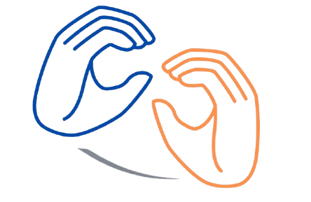

Authentic writing. Deaf and Hard of Hearing voices. Inclusive research.
Help us build a research collection of authentic English writing created by Deaf and Hard of Hearing adults.
Participate in the StudyParticipation is voluntary and fully online.
The English Deaf Corpus is a research project at the University of Florida that is creating an organized collection of short written texts produced by Deaf and Hard of Hearing adults.
The project seeks to better understand, recognize, and value authentic writing by Deaf and Hard of Hearing people. The corpus may support future research and contribute to more inclusive approaches to language, literacy, and education.
Participants complete a brief background questionnaire about their language use, education, and identity. They are also invited to write between one and six short responses to open-ended prompts.
Research on writing and literacy needs authentic examples that represent the language practices, experiences, and perspectives of Deaf and Hard of Hearing people.
Many ideas about writing have been developed without enough representation from Deaf and Hard of Hearing communities. The English Deaf Corpus seeks to help address this gap by creating a collection that recognizes linguistic diversity rather than treating differences in writing as deficits.
By sharing their writing, participants can help researchers and educators develop a more complete and inclusive understanding of English writing within Deaf and Hard of Hearing communities.
You may be eligible to participate if you:
The entire study is completed online. Participants will:
The background questionnaire is also available in ASL. Participation is completely voluntary. You may decline to participate or withdraw your consent at any time without consequences.
Start the StudyYour written responses and background questionnaire information will be anonymized and stored securely in a password-protected University of Florida Dropbox folder accessible only to members of the research team.
Anonymized texts and survey responses may be used in future research or shared with researchers whose work has received appropriate Institutional Review Board approval.
There is no direct financial benefit or payment for participating in this study.
Dr. Stefanie Wulff is a faculty member in the Department of Linguistics at the University of Florida. Her research focuses on language use, linguistic variation, second language development, and corpus-based approaches to language research.
Email: swulff@ufl.edu
Angela Hinojosa is a doctoral student in Special Education at the University of Florida. Her work focuses on language, literacy, writing, and the educational experiences of Deaf and Hard of Hearing students and communities.
Email: a.hinojosa@ufl.edu
[Add Ethan's background here.]
Email: ethangomez@ufl.edu
Rebecca Vides is a Hard of Hearing Doctor of Audiology student in the Department of Speech, Language, and Hearing Sciences at the University of Florida College of Public Health and Health Professions.
She supports the English Deaf Corpus by helping make project information and study materials accessible in ASL. She also contributes her professional knowledge and lived experience as a Hard of Hearing person.
Email: rebeccavides@ufl.edu
Zulma "Yary" Santiago is a Deaf Instructional Associate Professor in the Department of Speech, Language, and Hearing Sciences at the University of Florida College of Public Health and Health Professions.
She contributes her professional expertise, her lived experience as a Deaf person, and her commitment to accessible communication and engagement with Deaf and Hard of Hearing communities.
Email: zsantiagozayas@ufl.edu
For questions about the study, participation, accessibility, or the English Deaf Corpus project, please contact:
Angela Hinojosa
Email: a.hinojosa@ufl.edu
You may also contact the Principal Investigator:
Stefanie Wulff, Ph.D.
Email: swulff@ufl.edu
For questions about your rights as a research participant, contact the University of Florida Institutional Review Board:
University of Florida IRB02
Email: irb2@ufl.edu
Phone: 352-273-9600
Your writing can help expand how researchers and educators understand English writing within Deaf and Hard of Hearing communities.
Participate in the English Deaf CorpusParticipation is voluntary and fully online.